| 日付 | 2013年11月9日（土） |
|---|---|
| 山域 | 阿武隈周辺 |
| メンバー | 家族（妻、長女・2歳、長男・0歳） |
| 山行形態 | 子連れ日帰り |
| アクセス | 車 |
| ルート (Map) | 加波山神社真壁拝殿 (9:42) - (9:51) 加波山不動 - (10:37) 5合目 - (11:20) 加波山神社拝殿 - (11:41) 加波山 (12:17) - (13:28) 本宮路参道入口 - (13:52) 加波山神社真壁拝殿 |
筑波山は連峰の形をとっている。
関東平野から望む筑波山は独立峰のように見えるが、
その背後には山が連なっていて、それらは筑波連峰と呼ばれている。
筑波山を除けばあまり目立たない山々なのだが、
そのなかで加波山は標高が高く比較的目立つ存在である。
山頂近くまで車道が達しており、登山の対象としてはあまり魅力がないのだが、
古来より山岳信仰の対象になっている山であるため、一度は登ってみたいと思っていた。
加波山神社真壁拝殿の駐車場に車を停めさせてもらう。標高90m。
比較的新しい派手な建物が建っている。
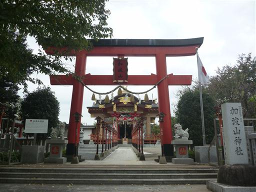
まずは神社にお参り。天狗の面の目が光っている。ちょっと不気味な神社だ。
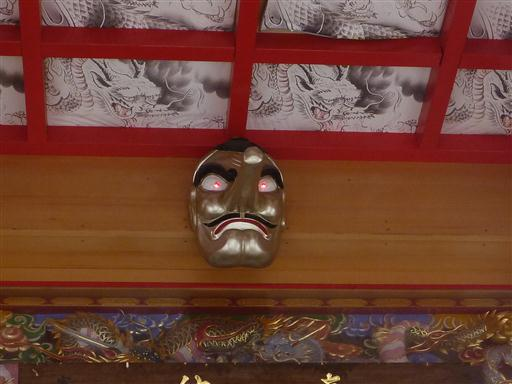
準備を整えて歩き出す。最初はしばらく車道歩きだ。
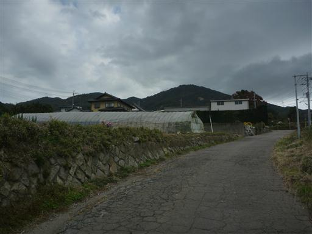
南の方角には筑波山が見えている。
それほど悪い天気予報ではなかったのだが、暗い雲が立ち込めている。
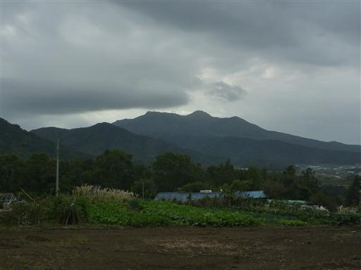
加波山不動に到着。車道をそのまま歩いても良いが、この神社から登山道が続いている。

こちらは古い建物のようだ。この辺りは加波山と名の付く神社が多数あって非常に紛らわしい。
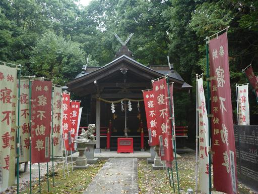
足元にはドングリが無数に落ちている。
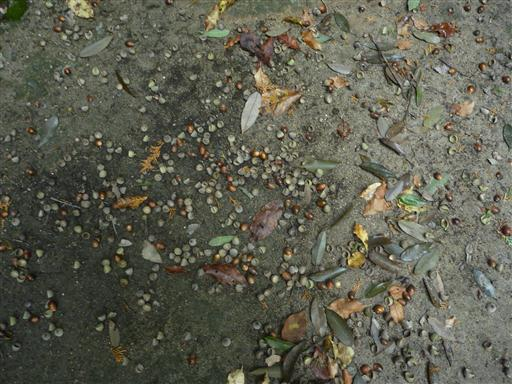
暗い沢に小さな橋が架かっている。
ここから登山道が始まるようだが、人の入った気配がなくあまり進む気になれない。
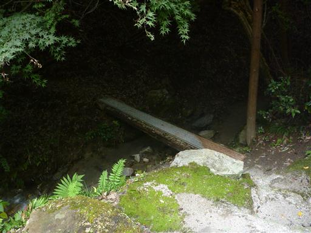
そのまま進んでみると暗い道はすぐに終わり、明瞭な登山道になる。
娘は歩く気がないらしく、少しだけ歩かせたがすぐにキャリアに乗せる。
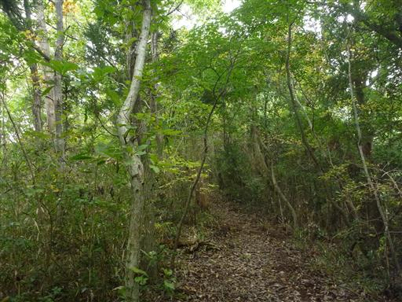
足元に栗がたくさん落ちている。

斜面に採石場が見えてくる。
この山は御影石がとれるらしく、西側の斜面にはあちらこちらに採石場がある。
歴史ある山が削られ形を変えていくのは武甲山と同じである。
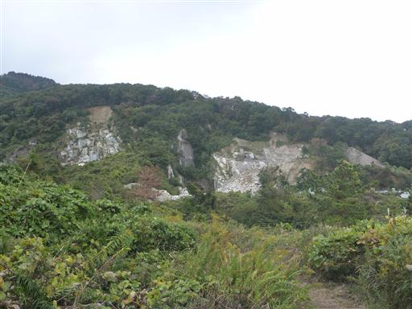
しばらく歩くと車道に出てくる。加波山不動で分かれた車道とはここで合流する。
ここには登山道との分岐に標識がないため、下りだと登山道に気づくのが難しそうだ。
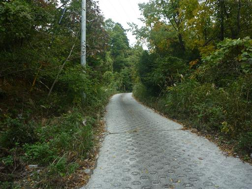
採石場に到着。大きな音を立てて石が削られている。
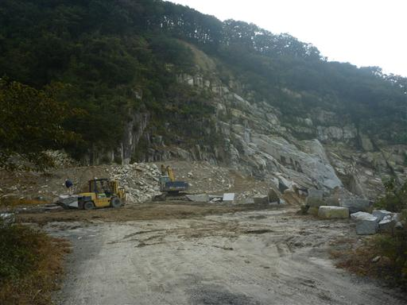
車道をそのまま登っていくと登山道入口に到着する。
ここが加波山のちょうど5合目にあたる。
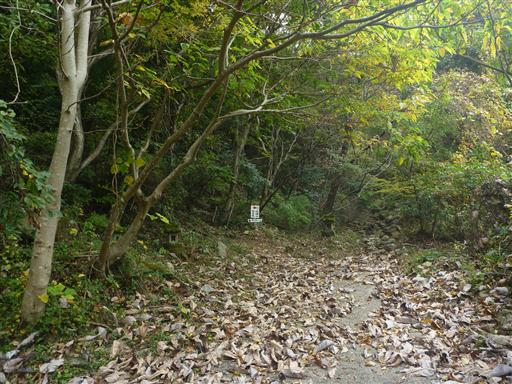
ここには小さな祠が祀られている。
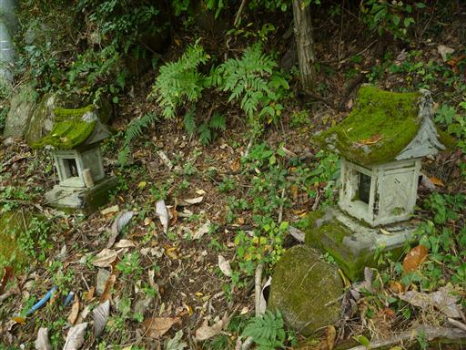
ここから本格的な登山道が始まる。
これまで緩やかな傾斜だったが、突然つらい登りが始まる。
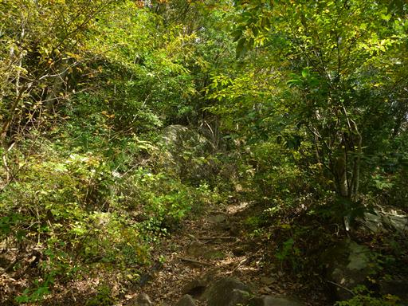
上から落ちてきたと思われる大きな石が地面に刺さっている。
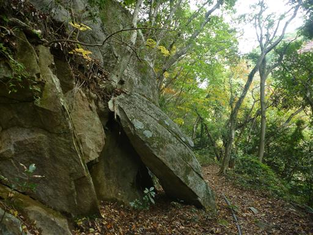
六合目に到着。山岳信仰の山なので、合目を示す石柱が見られる。

足元に四角い石が頭を出している。
自然の石か人工的に切られたものかは分からないが、自然の石だとしたらかなり美しい形の石だ。
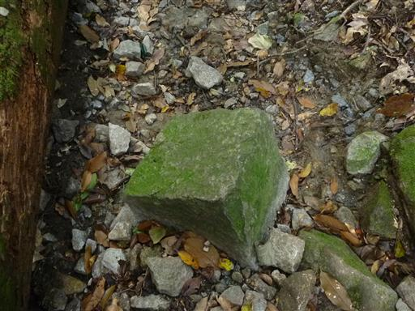
七合目付近は少しだけ植林地帯が広がる。
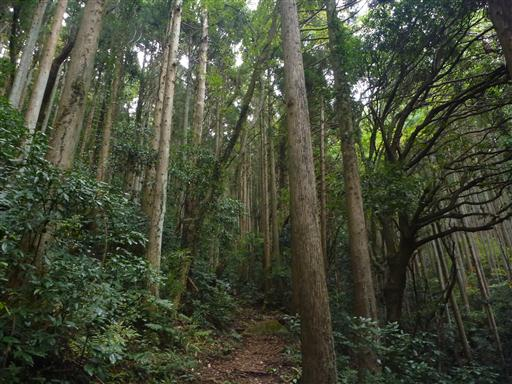
七合目に到着。山椒魚谷という小さな沢を渡る。
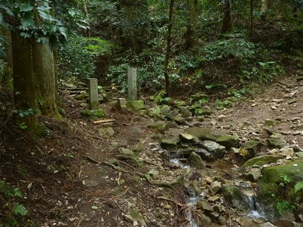
しばらく登ると林道を横切る。この山は採石場の他に林道もあちこちにできている。
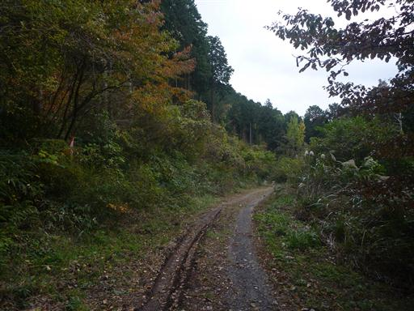
傾いた石柱。今にもこけてきそうだ。
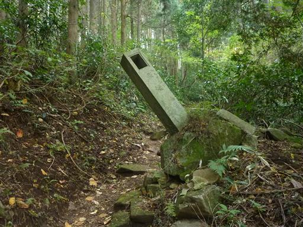
しばらく登ると稜線に到達し、立派な鳥居が現れる。
ここに駐車場があり、ここまでは車で来ることができる。
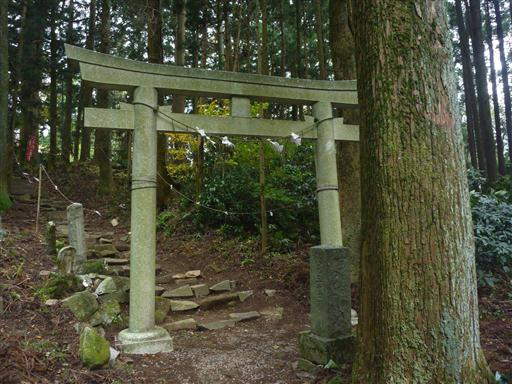
鳥居をくぐり古い石段を登っていく。

立派な大木が立っている。
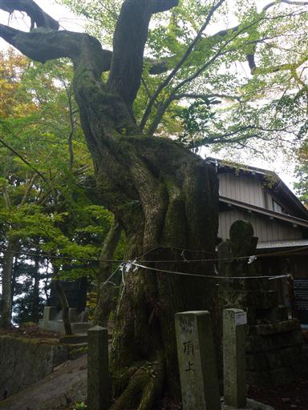
加波山神社拝殿に到着する。社務所がある立派な神社だが人影は少ない。
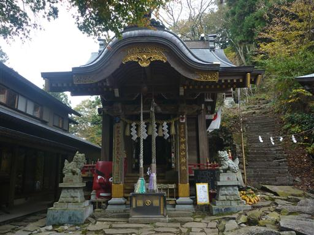
ここから加波山に通じる禅定道の説明書きがある。
神社の数が多すぎて覚えきれない。
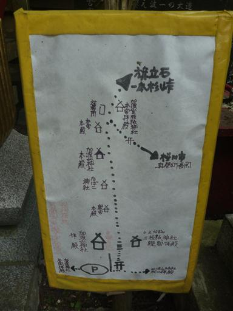
加波山神社拝殿の脇から急な石段を登っていく。
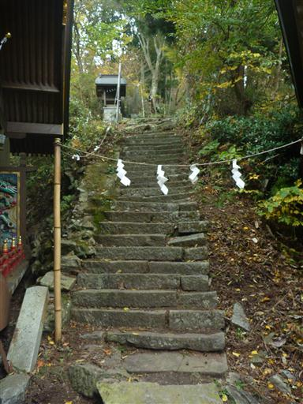
あちらこちらに木の枝に挟まれた白い紙が見える。
修験者が残していったものだろう。
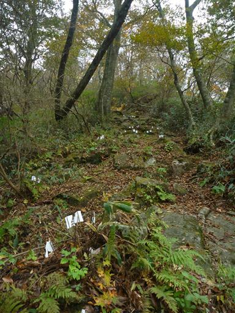
山頂部は岩がちな地形が続く。岩場というほどではないが急傾斜の道だ。
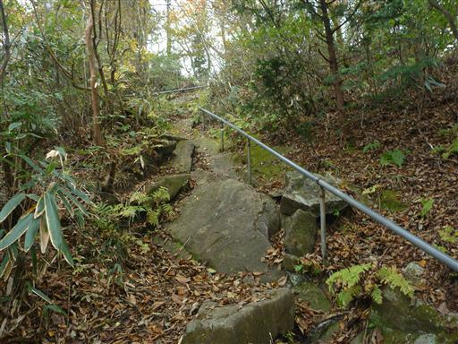
形の良い大きな石が突き立っている。
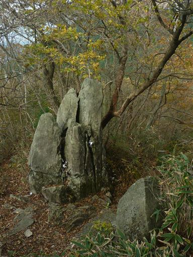
加波山神社新宮本殿に到着。
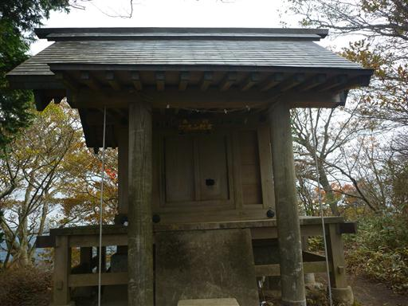
葉を落とした木々が広がる稜線を歩いていく。風が強くものすごく寒い。
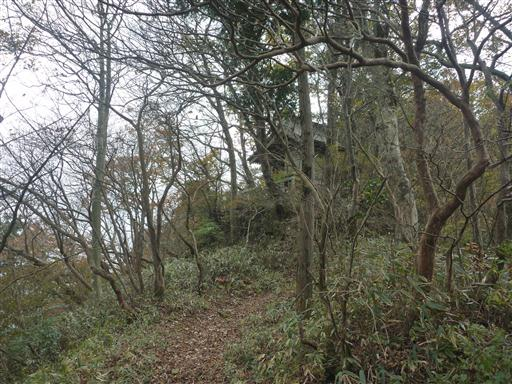
たばこ神社に到着。たばことは、なかなか珍しい神社だ。
重さ60キログラムのジャンボきせるを担ぎ上げる、きせる祭りが毎年行われる。
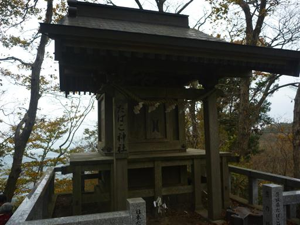
岩がちな地形は続く。大きな岩の隙間を登っていく。
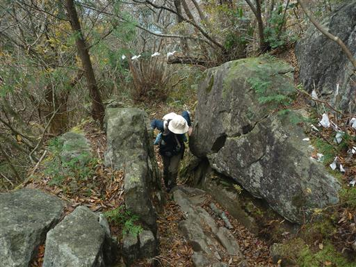
次は加波山神社本殿。同じような神社が続く。
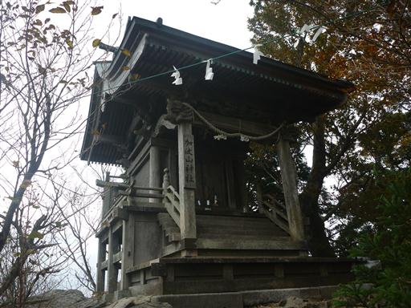
少しだけ視界が開け、筑波連山を望む。
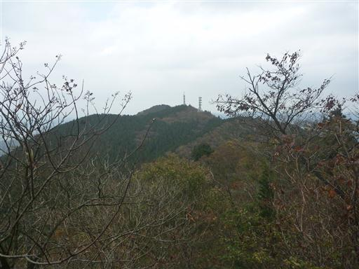
辺りは美しい樹林帯が広がる。
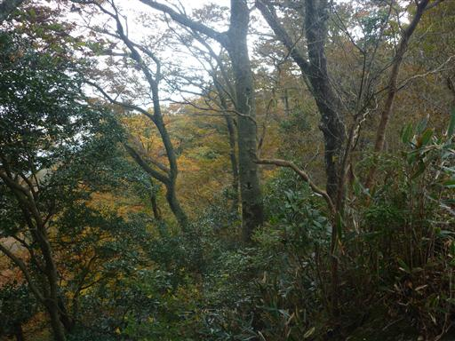
最後に加波山神社本宮本殿に到着。ここが加波山の山頂のようである。標高709m。
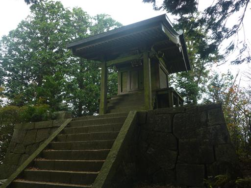
山頂標識を探していたら、目立たないところに小さな標識を見つける。
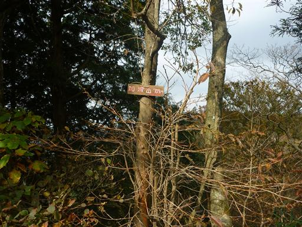
足元には巨大な石が鎮座している。
冷たい風が吹いていて寒いが、ここで腰を下ろして昼食をとることにする。
ここで事件発生。車で作ってきた熱々のミルクのすぐ側にチョコレートがあったらしく
チョコレートが解けてウエストポーチの中が全てチョコレートに汚染されてしまった…
ミルクを持ってくるときは近くに置くものに要注意だ。

昼食をとったら寒いので即下山開始。登りは親宮路を歩いたため、下りは本宮路を歩く。
下り始めの階段が急傾斜なうえ、ほとんど崩壊していて、極めて下りにくい。

鳥居をくぐるとあとは普通の登山道が続いている。意外にも樹林帯が美しい。
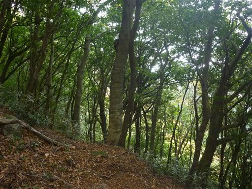
紫色の実。何の実だろうか？
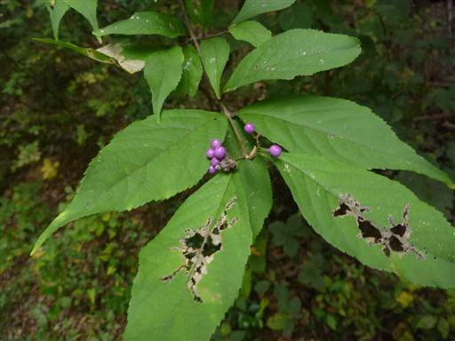
登山道の真中にポツンと大きな石が落ちている。
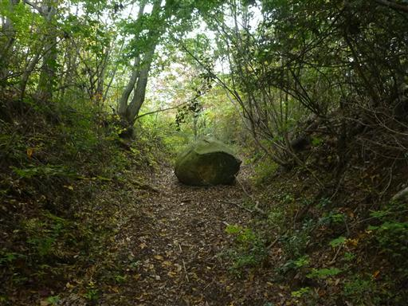
娘が全く歩かないため強制的にキャリアから下ろして歩かせる。
山頂では寒くて震えていたので、歩くと少しは体が温まるだろう。
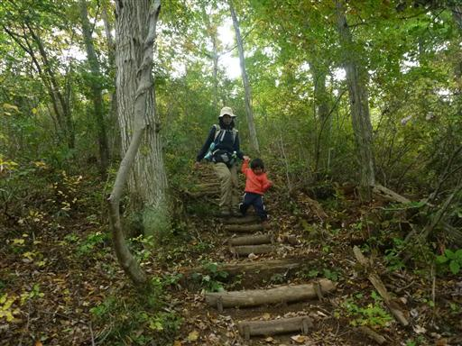
道は途中から林道になる。車の通ることがなさそうな荒れた林道を下って行く。
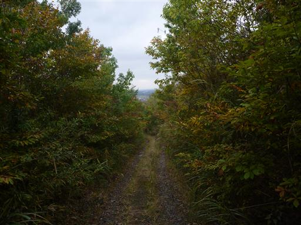
鳥居をくぐって本宮路参道入口に下山する。
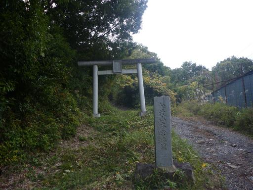
足元にオンブバッタを発見。もうかなり寒いのに元気に飛び跳ねている。
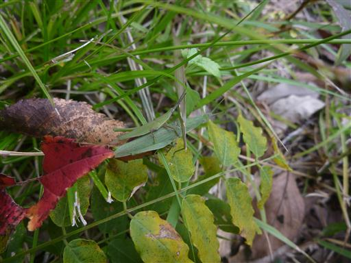
下山地点には、怪しげな像が立つ謎の敷地がある。
有刺鉄線付きの頑丈なフェンスに囲まれており、人が立ち入らなくなって久しい感じだ。
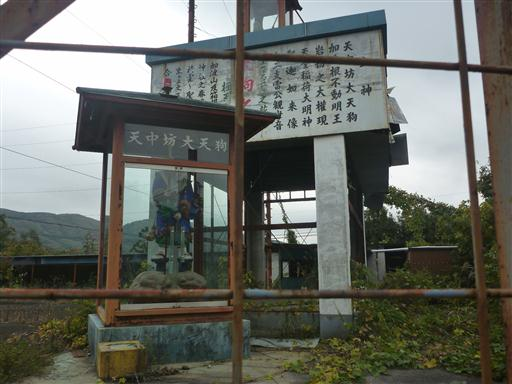
ここからは車道をとぼとぼと下って行く。人影はほとんどない寂しい道だ。
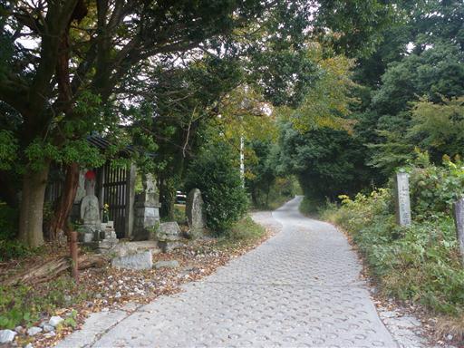
道端にカラスウリの実がなっている。娘は最近実に凝っているので興味津々だ。
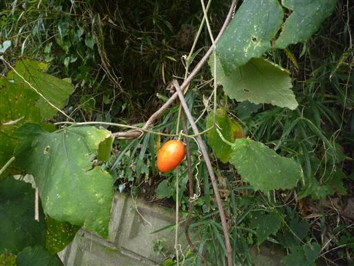
加波山神社の駐車場に戻ってくる。
加波山信仰で有名な加波山であるが、この時期は人影が少なかった。
天気が悪かったこともあり、少し寂しい雰囲気が漂う登山だった。
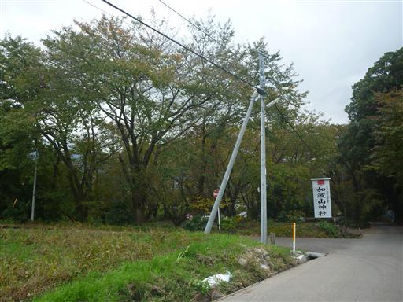